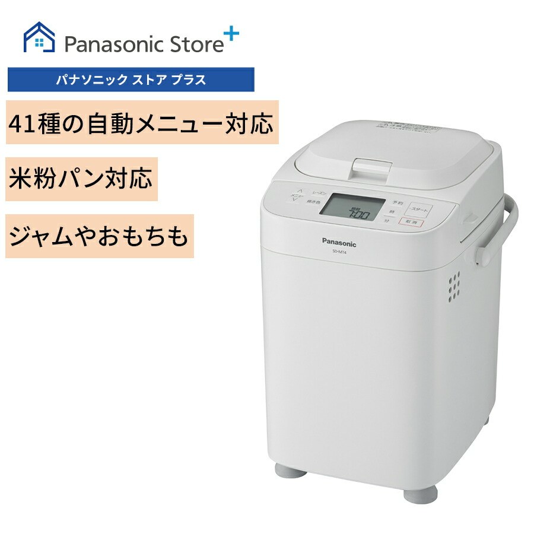

ホームベーカリーは月額1,980円で試してから買う｜0.6斤レンタルと1斤・オートメニュー41種のSD-MT4を比べる


ホームベーカリーは「買ったけれど使わなくなった」という声も聞かれる家電です。だからこそ、購入の前に月額制のレンタルで生活に合うか試す、という順番があります。この記事では、試す場合と買う場合を同じ土俵で比べます。
・まず失敗したくない・置き場所が限られる → foodable コンパクトベーカリーコース（パナソニック SD-CB1・0.6斤）で試す
・家族で毎日食べる・1斤をしっかり焼きたい → パナソニック SD-MT4（1斤・オートメニュー41種）を購入
・パンより毎日の調理を楽にしたい → foodable オートクッカー ビストロコース（自動調理鍋のレンタル）
早見表｜試す・買う・調理を任せる、の3つを比べる
| 選択肢 | タイプ | 容量・特徴 | 料金・条件 |
|---|---|---|---|
| foodable コンパクトベーカリーコース（SD-CB1） | レンタル（サブスク） | 0.6斤・コンパクト | 月額1,980円（税込・送料込） |
| パナソニック SD-MT4 | 購入 | 1斤・オートメニュー41種 | 価格は販売店により異なります |
| foodable オートクッカー ビストロコース | レンタル（サブスク） | 自動調理鍋 | 月額3,980円（税込・送料込）・最低利用期間18か月 |
foodable各コースの料金・条件はパナソニック発表資料に基づきます（2026年11月23日確認）。SD-MT4の仕様はPanasonic Store Plus 楽天市場店の商品ページで確認しました（2026年11月28日）。
買う前に試す｜foodable コンパクトベーカリーコース
コースの内容（パナソニック発表資料）
月額 1,980円（税込・送料込）※2026年4月改定
使える機器はパナソニック SD-CB1（0.6斤）です。0.6斤は一人暮らしや少人数で食べきりやすい量で、本体もコンパクトなため、狭いキッチンでも置き場所を取りにくいのが特徴です。月額制のため、購入のような初期費用はかかりません。
向いているのは、「焼きたてパンの生活が自分に合うか分からない」「置き場所が限られる」という人です。コースの契約条件・解約条件は、申し込み前に公式サイトで必ず確認してください。
foodable コンパクトベーカリーコースの公式サイト（公式サイトへの通常リンク）
試す期間の目安を計算すると：
月額1,980円 × 3か月 ＝ 5,940円／月額1,980円 × 6か月 ＝ 11,880円
焼く頻度と置き場所の感覚は、3〜6か月使えばほぼ判断できます。「続かない」と分かった時点でやめられるのが、購入との一番の違いです。

判定：ホームベーカリーの失敗は「使わなくなった置き物」になることです。月額制で試せるうちは、試してから買う順番が失敗を小さくします。
購入の本命｜パナソニック SD-MT4（1斤）
| 項目 | 内容（公式ストアの商品ページ） |
|---|---|
| タイプ | 購入するホームベーカリー（1斤タイプ） |
| オートメニュー | 41種（イースト・レーズン／ナッツの自動投入対応） |
| 大きさ・重さ | 幅24.1×奥行30.4×高さ34.7cm／約5.6kg |
| 消費電力 | 430W（100V・50Hz/60Hz） |
| 価格 | 販売店により異なります。購入前に販売ページで確認してください |
家族で朝食分をまとめて焼きたい人、食パン以外にも米粉パンや生地作りまで幅広く使いたい人に向きます。気になる点は、購入タイプのため初期費用がかかることと、1斤タイプは0.6斤タイプより置き場所を取ることです。設置スペースの幅と高さは事前に測っておいてください。
Panasonic Store Plus 楽天市場店でSD-MT4を見る（公式ストアへの通常リンク）
パンの隣の選択肢｜foodable オートクッカー ビストロコース
自動調理鍋のレンタル（パナソニック発表資料）
月額 3,980円（税込・送料込）／最低利用期間 18か月
困りごとが「パンを焼きたい」ではなく「毎日の調理の手間」なら、自動調理鍋の方が先に効きます。材料を入れた後の火加減の見張りから離れられるのが特徴です。ただし最低利用期間が18か月と定められているため、申し込み前に期間と解約時の扱いを公式サイトで必ず確認してください。パン焼き専用機ではないので、役割はベーカリーコースと異なります。
foodable オートクッカー ビストロコースの公式サイト（公式サイトへの通常リンク）
失敗しない選び方｜容量・メニュー・置き場所
容量で選ぶ。一度に食べる量から逆算します。少人数で焼きたてを少しずつなら0.6斤、家族で朝食分をまとめて焼くなら1斤が目安です。容量が大きいほど本体も大きくなりやすいため、置き場所の幅と高さも合わせて測っておきましょう。
メニューの内容で選ぶ。自動メニューは数が多いほど選択肢は広がりますが、実際に使うのは一部ということもあります。食パン中心か、米粉や全粒粉、生地作りまでしたいか、自分の使い方に合うメニューがあるかを確認してください。
買うか、試すかで選ぶ。長く使う自信があるなら購入、続くかどうか分からないなら月額制で試す、という分け方が失敗しにくい考え方です。レンタルで試せば、置き場所や生活リズムとの相性を確認してから購入を判断できます。
朝に焼きたてを食べたい人は、タイマー予約の対応も仕様で確認しておくと安心です。夏場など室温が高い時期の扱いも、機種ごとの案内を見てください。
よくある質問
- Q. 0.6斤と1斤はどちらがいいですか？
- 食べる量で決めるのが基本です。少人数で食べきる量が少ないなら0.6斤、家族で朝食分をまとめて焼くなら1斤が向いています。本体の大きさも変わるため、置き場所も合わせて確認してください。
- Q. foodable コンパクトベーカリーコースの月額はいくらですか？
- 月額1,980円（税込・送料込）です。パナソニック発表による料金で、2026年4月に改定された内容です（2026年11月23日確認）。最新料金は公式サイトで確認してください。
- Q. オートクッカー ビストロコースに最低利用期間はありますか？
- 最低利用期間は18か月とされています。月額は3,980円（税込・送料込）です（いずれもパナソニック発表資料）。契約前に公式サイトで条件を確認してください。
- Q. 買うのとレンタルはどちらがお得ですか？
- 一概には言えません。長期間毎日使うなら購入、続くか分からない・まず試したいなら月額制のレンタルが判断しやすい方法です。総額の比較は、利用したい期間と公式の料金・条件をもとに確認してください。

関連｜パンを焼く日と、作らない日の夕食
自炊の負担を減らす仕組み
パンを焼く習慣ができても、夕食づくりが重い日はあります。自炊が続かない理由と、買い物・献立・片付けの負担を減らす仕組みは「自炊が続かない一人暮らしへ」にまとめています。献立を任せたい日は、ミールキットのおためしも選択肢です。
Oisixのおためしセット（1,980円）を公式で見る
判定のまとめ：迷ったら「試す→続くと分かってから買う」の順番です。容量は食べる量から、メニューは自分の使い方から決めてください。
出典：パナソニック発表資料（foodable各コースの料金・条件、2026年11月23日確認）／Panasonic Store Plus 楽天市場店の商品ページ（SD-MT4の仕様、2026年11月28日確認）。料金と条件は変動します。
※このページにはアフィリエイト広告が含まれます（A8.net）。申し込みボタンがあるのは提携済みのOisixのみで、他の会社へのリンクは公式サイトへの通常リンクです。